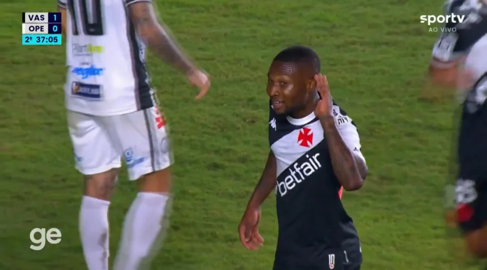
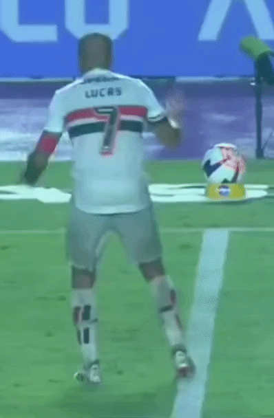
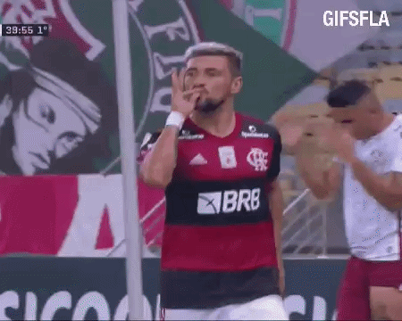
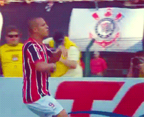
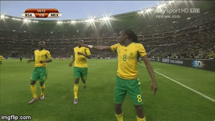

TOP 5 COMEMORAÇÕES DO FUTEBOL
(SEM CLUBISMO)
Honra ao Mérito: Quase Gol

Loide Augusto comemora quase gol com mão na orelha. Vasco 1 (7)x(6) 1 Operário-PR - 20/05/2025
TOP 67: Six Seven

Lucas Moura gesticulando "Six-Seven". São Paulo 2 x 1 Primavera - 07/02/2026
TOP 4: Chutando Bandeira
 Luciano chutando a bandeira do Corinthians. Corinthians 2 x 1 São Paulo - 25/07/2023
Luciano chutando a bandeira do Corinthians. Corinthians 2 x 1 São Paulo - 25/07/2023
TOP 3: Fumando Um

Arrascaeta fingindo fumar. Flamengo 1 x 2 Fluminense - 06/01/2021
TOP 2: Parado na Esquina

Luis Fabiano parado com a mão no queixo. Corinthians 1x2 São Paulo - 26/08/2012
TOP 1: Fala Pro Teu Pai Que Eu Não Quero Dinheiro

Siphiwe Tshabalala e companheiros de equipe comemorando primeiro gol em uma Copa do Mundo. África do Sul 1 x 1 México - 11/06/2010